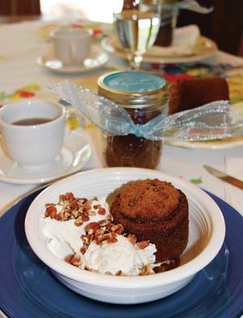

Canning and preserving food was a necessary part of survival for my grandparents, who lived and raised their family in rural Georgia more than 60 years ago. As a child, I loved the way those glorious Mason jars adorned my grandmother’s shelves - dark amber fig preserves, emerald pepper relish, ruby-red stewed tomatoes and golden pickled peaches.
When I read about cooking and preserving cakes in glass canning jars several years ago, I immediately thought of my grandparents. That year, as a tribute to them, I made several “cake in a jar” recipes to give to friends and family. They were a hit!
You can use any purchased cake mix or adapt a recipe to make the “cakes in a jar,” but follow these basic tips:
One of my favorite jar cake recipes is Georgia pecan cake with apple, served with a colossal scoop of vanilla bean ice cream. Enjoy!
3 1/2 cups all-purpose flour
1/2 tsp baking powder
2 tsp baking soda
1 1/2 tsp salt
1 1/2 tsp cinnamon
4 large eggs
2 2/3 cups of sugar
2/3 cup solid vegetable shortening
2 cups applesauce
2/3 cup water
1 cup pecans, finely chopped
Preheat oven to 325 degrees. Lightly grease the insides of eight sterile, straight-sided, wide-mouth pint canning jars with vegetable shortening or a nonstick cooking spray.
In a large mixing bowl, sift flour, baking powder, baking soda, salt and cinnamon. In another large mixing bowl, cream eggs, sugar and shortening. Add applesauce and water and blend well. Add flour mixture gradually to liquid ingredients and mix. Fold in chopped pecans.
Fill clean jars half full. Bake without lids for 35 to 40 minutes or until a wooden toothpick inserted in the center comes out clean and dry. While the cakes are baking, heat the lids and rings in boiling water.
When the cakes are done, carefully remove them from the oven one at a time, wipe the rim and immediately affix lids and rings. The jars will seal as the cakes cool. Allow several hours to cool completely before placing your cakes in the refrigerator or freezer.
|
 AMBER LANIER NAGLE You can bake this luscious Georgia pecan cake in a jar to give as a gift or to freeze for later use. |
|
|